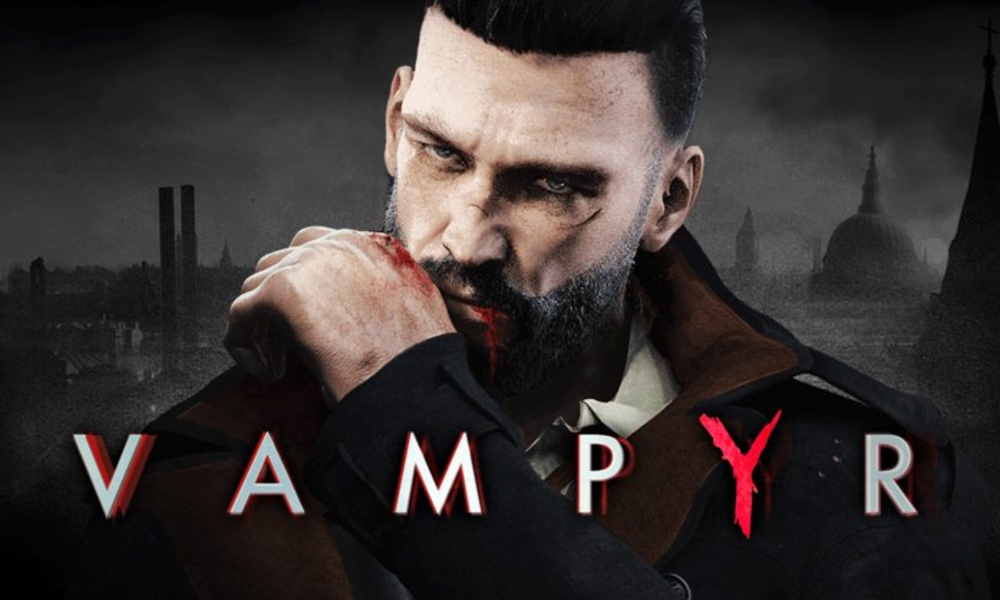
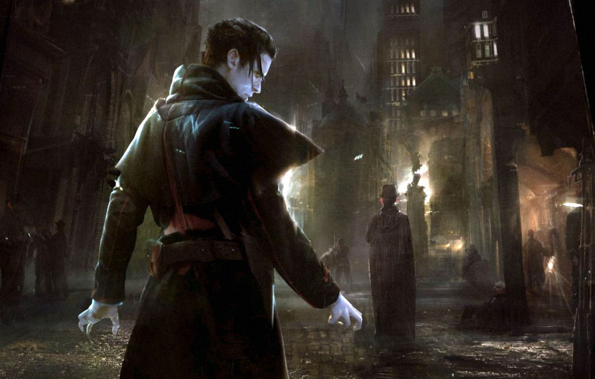

Vampyr: la recensione
L'atteso action RPG di Dontnod Entertainment ci porta nella Londra del 1918, fra vampiri ed epidemie
RECENSIONE di Enrico Salmaso - 05/06/2018
INDICE
Il contatore di Steam indicava un totale di ventidue ore quando abbiamo completato la campagna di Vampyr, , rivelando uno dei finali disponibili: un epilogo fondamentalmente amaro, che dovrebbe porsi a metà strada fra la conclusione "perfetta", ottenibile senza uccidere nessuno degli NPC, e la peggiore possibile, a cui immaginiamo si arrivi facendo letteralmente una strage degli amici e dei nemici del dottor Jonathan Reid, che nel mezzo della diffusione dell'influenza spagnola a Londra, nel 1918, si ritrova misteriosamente trasformato in un vampiro. Il suo primo gesto da Ekon è purtroppo tragico: accecato dalla sete di sangue, morde la prima persona che gli capita a tiro... e sfortunatamente si tratta di sua sorella Mary. Sconvolto dall'accaduto, alla disperata ricerca di risposte, Reid scopre di poter utilizzare i suoi nuovi sensi per percepire il sangue, che si tratti di quello in circolo nelle vene delle persone ancora in vita o di quello sparso a terra o sui muri, segno evidente di un delitto.
Le tracce lo portano a interrogare alcuni abitanti nella zona del porto, prendendo confidenza con il tradizionale sistema di dialoghi con opzioni a ruota, e quindi al suo primo combattimento contro uno Skal, aberrante progenie dei vampiri, intento a togliere la vita a un uomo di fede, gestore di un rifugio per disperati. Jonathan riesce a salvare la vittima designata e fa la conoscenza di due personaggi chiave per la sua nuova vita: la bella Elizabeth Ashbury, anch'essa una vampira, e il dottor Edgar Swansea. Quest'ultimo gli propone una collaborazione per far luce sull'epidemia che tormenta Londra e che sembra avere a che fare con le orde di Skal che sempre più frequentemente si aggirano per le strade della città: Reid potrà lavorare presso il Pembroke Hospital, utilizzando le proprie conoscenze di ematologo per studiare il morbo e individuarne l'origine. Facendo, naturalmente, il turno di notte.
Animali Notturni
Archiviate le prime fasi di gioco, che servono per introdurci ai meccanismi di base del gameplay, l'esperienza di Vampyr rivela le proprie carte nella forma di una struttura sandbox liberamente esplorabile (al netto di qualche caricamento necessario per accedere a determinati edifici), che consente di visitare quattro diverse zone di Londra: il porto, il già citato Pembroke Hospital, Whitechapel e, nella seconda parte della campagna, West End. Ognuno di questi distretti vanta un differente "stato di salute" che dipende da come se la passano i suoi abitanti, dall'eventuale eliminazione di figure chiave e da come il protagonista interviene al riguardo, offrendo medicinali a chi ne ha bisogno per migliorare la condizione generale del quartiere.
Il peggioramento dello stato di una specifica zona moltiplica la presenza di nemici, che si tratti di Skal, di Ekon o di cacciatori di vampiri, questi ultimi divisi in varie categorie: ci sono i soldati armati di torce o di pistole, quelli che sparano dardi infuocati, le truppe corazzate armate di fucile a pompa o gas velenoso, o ancora i "predicatori" con la loro stazza imponente, il crocifisso e l'acqua benedetta. Non mancano poi i boss, che danno vita a duelli sfiancanti e ben congegnati. Una varietà di tutto rispetto, con avversari che salgono di livello a seconda del distretto in cui si trovano e che ci daranno filo da torcere dall'inizio alla fine dell'avventura, rivelando un approccio ai combattimenti che in alcuni casi si avvicina terribilmente alla spietatezza dei soulslike: il danno inflitto anche dai nemici più comuni è ingente, i game over si sprecano e l'unica differenza rispetto a produzioni più hardcore sta nel fatto che una volta tornati in vita non perderemo i punti esperienza raccolti fino a quel momento.
Giovani vampiri crescono
In giro per la buia, inquietante e fosca Londra notturna di Vampyr è possibile trovare diversi rifugi per il dottor Reid, luoghi in cui esaminare sostanze raccolte in giro, creare sieri e farmaci, nonché utilizzare il ricco e variegato loot (ottenibile sia spulciando cassonetti, mobili e oggetti, sia raccogliendo ciò che viene lasciato dai nemici uccisi) per migliorare le armi che compongono l'equipaggiamento. Ce ne sono ovviamente di diverso tipo: le falci e le mazze, lente ma potenti, occupano entrambi gli slot disponibili ma consentono di parare i colpi degli avversari per aprire un varco nella loro difesa e consentirci di morderli, facendo in questo modo aumentare la barra del sangue del protagonista, necessaria per l'esecuzione di tutte le mosse speciali; le spade e i pugnali, veloci ma capaci di infliggere danni minori, permettono di conservare buona parte della stamina e impiegarla per le schivate rapide, la manovra che trasforma il protagonista in una nuvola di fumo; e infine tutti gli strumenti secondari, che si tratti di pistole (non particolarmente efficaci ma in grado di stordire il nemico) o coltelli speciali, che a ogni fendente raccolgono un po' di sangue.

Un lupo fra le pecore
La crescita di Jonathan Reid nel corso della campagna di Vampyr è un fattore fondamentale perché si possano affrontare le ultime fasi della storia in modo relativamente agevole, sebbene come detto il grado di sfida rimanga alto in tutti i casi e porti spesso a riprovare più volte boss fight ma anche combattimenti contro nemici standard, magari presenti in gran numero all'interno di un luogo che abbiamo il compito di esplorare. Perseguire il potenziamento del personaggio non è semplice e costa dei sacrifici, nel senso letterale del termine: laddove il livello di fascinazione lo consenta (deve essere superiore a quello della potenziale vittima), potremo scegliere di mordere uno dei sessantaquattro NPC divisi fra i quattro distretti della mappa e guadagnare in tal modo una grande quantità di punti esperienza, molto più che affrontando con successo qualche duello o portando a termine quest secondarie.

La tentazione di lasciarsi andare alla sete di sangue degli Ekon aumenta dunque di pari passo con l'incremento della sfida, e in tale frangente il titolo di Dontnod Entertainment ci consegna le redini della situazione, lasciando a noi la decisione di chi uccidere e perché, sulla base del background di ogni personaggio; oppure di resistere alla voglia e non eliminare nessuno, così da ottenere alla fine la miglior conclusione possibile. In tal senso i limiti sono pochi, ed è addirittura possibile "abbracciare" anche le figure responsabili del commercio, quelle presso cui potremo acquistare componenti e ingredienti utili a creare farmaci, sieri e potenziamenti per le armi. Farlo ovviamente implicherà un cambiamento nell'economia della zona, ma di fatto il commercio non rappresenta una parte fondamentale dell'esperienza e vi ritroverete dunque a snobbarlo senza troppi complimenti: si tratta di uno degli aspetti che il team francese non ha saputo valorizzare a dovere.
Intervista con il vampiro
Non c'è dubbio che il comparto narrativo sia uno degli elementi fondamentali di Vampyr, e da questo punto di vista a nostro avviso è stato fatto un ottimo lavoro, al netto magari di qualche mancanza. La storia del dottor Reid viene raccontata in maniera convincente, con i giusti tempi , e sebbene la parte finale dell'avventura eviti di approfondire determinati rapporti, perdendosi un po' nella fretta di concludere, non c'è dubbio che il "lore" creato da Dontnod Entertainment sia particolarmente ricco di spunti. L'uso di un sistema collaudato come la ruota dei dialoghi permette, facendo le scelte giuste, di scoprire nuovi possibili indizi su determinati NPC, aprendo a quest secondarie e a situazioni in cui uccidere qualcuno potrebbe risultarci finanche sensato ai fini di una certa coerenza etica. Alle domande più banali si contrappongono infatti questioni centrali, indicate con un testo di colore differente, così come le scelte che andranno poi a influenzare l'andamento della storia. Allo stesso modo, lo scenario è infarcito di lettere, diari e testimonianze che consentono di approfondire ulteriormente la conoscenza della Londra che fa da sfondo all'avventura, gli intrecci talvolta complessi che hanno portato alla diffusione della misteriosa epidemia che tiene sotto scacco la città e il rapporto talvolta sorprendente che lega alcuni cittadini.

Ad accompagnare questo impianto nel migliore dei modi ci sono ottimi dialoghi in inglese (sottotitolati in italiano), ben recitati e un audio design molto ben riuscito, che comunica efficacemente le atmosfere del gioco e sottolinea determinate sequenze con un indovinato mix di archi, ma anche con motivi inquietanti quando Jonathan decide di "abbracciare" qualcuno, ipnotizzandolo per poi condurlo in un luogo isolato dove dar sfogo alla propria sete. Alcuni momenti ci hanno ricordato la serie televisiva "Penny Dreadful", e non lo riteniamo affatto un difetto, anzi.
PRO
- Grande atmosfera, "lore" ricco e sfaccettato
- Combattimenti molto impegnativi, belle abilità
- Abbastanza lungo, discretamente ampio
CONTRO
- Diverse soluzioni visive appaiono datate
- Resta la sensazione di un potenziale inespresso
8
COMMENTO FINALE
Vampyr è un action RPG in grado di offrire un'esperienza coinvolgente, impegnativa, a tratti inquietante, forte di un'ambientazione perfetta per raccontare questo tipo di storie. La Londra del 1918 in cui si muove il dottor Jonathan Reid, appena creato vampiro, è oscura e minacciosa, con pericoli dietro ogni angolo che si manifestano nella forma di cacciatori e mostri, da affrontare secondo le meccaniche di un sistema da combattimento dotato di uno spessore sorprendente, tante volte spietato. È in questo contesto che si sviluppano le vicende di un set di personaggi con cui dovremo interagire e rapportarci, costruendo sulla base delle nostre scelte un epilogo differente al termine di una campagna discretamente corposa, che non mancherà di lasciare il segno. Anzi, due: rigorosamente sul collo.